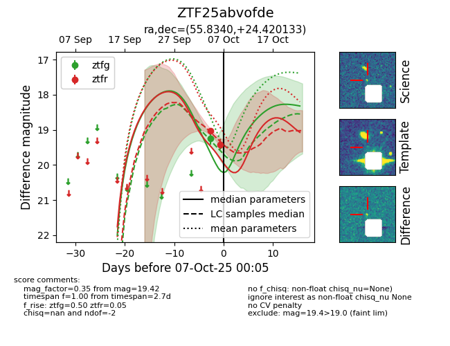
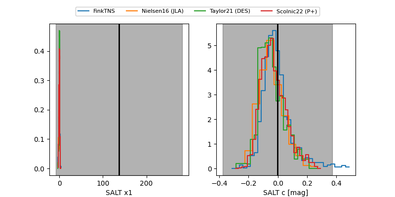

FINK: ZTF25abvofde
Lasair: ZTF25abvofde
ALeRCE: ZTF25abvofde
ZTF25abvofde (ztf,fink)
equatorial (ra, dec) = (55.8340,+24.42013)
galactic (l, b) = (165.6708,-23.85332)


last ztfg=19.25, ztfr=19.42
1 ztfg, 2 ztfr detections